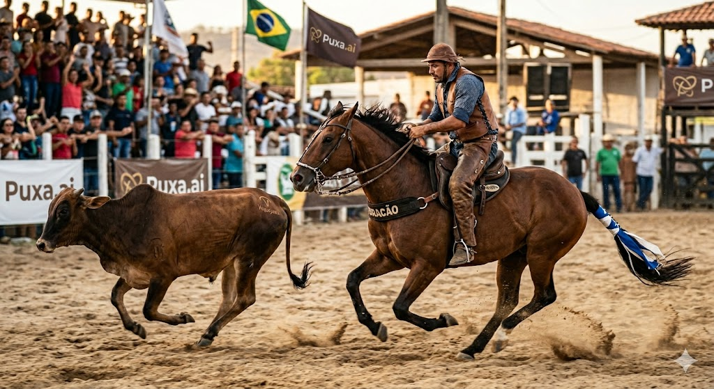

A primeira plataforma de inteligência de dados e análise por vídeo projetada exclusivamente para a vaquejada. Métricas de desempenho, sistema VAR, Odd's em tempo real e muito mais.
Cada recurso foi projetado para trazer ao esporte o mesmo nível de profissionalismo e precisão das maiores modalidades do mundo.
Dados completos de cada prova: tempo de puxada, velocidade de entrada, distância percorrida, taxa de sucesso por faixa e muito mais. A vaquejada traduzida em números.
AnalyticsPerfil de desempenho detalhado para cada vaqueiro e cada cavalo. Histórico de provas, evolução temporal, pontos fortes e oportunidades de melhoria.
PerformanceO primeiro sistema de Verificação por Vídeo da vaquejada. Múltiplos ângulos, replay em câmera lenta e análise frame a frame para decisões justas e transparentes.
PioneiroProbabilidades calculadas com base em dados históricos, desempenho recente, condições da pista e perfil da dupla. Informação para decisões mais inteligentes.
Data-DrivenVisualização de cima da arena com mapa de calor e trajeto percorrido pelo boi e pelos cavalos. Identifique padrões, zonas de maior ação e estratégias de posicionamento.
GeoespacialAcervo completo de provas, vaqueiros, cavalos e eventos. Consulte resultados históricos, compare desempenhos e acesse o maior banco de dados da vaquejada.
Big DataAssim como o futebol evoluiu com a tecnologia de vídeo, a vaquejada agora conta com seu próprio sistema de verificação. O VAR da Puxa.ai utiliza múltiplas câmeras posicionadas estrategicamente na arena para capturar cada detalhe da prova.
Replay em câmera lenta, análise frame a frame e ângulos exclusivos que permitem uma avaliação precisa e imparcial. Mais transparência, mais justiça, mais profissionalismo.
Cada prova gera dezenas de dados que, até agora, se perdiam na poeira da arena. A Puxa.ai captura, processa e apresenta métricas detalhadas do esporte, do vaqueiro e do cavalo, transformando informação bruta em inteligência competitiva.
Probabilidades calculadas por algoritmos proprietários, alimentados por dados históricos e variáveis em tempo real de cada competição.
| Dupla | Cavalo (Puxador) | Odd Puxada | Odd Classificação | Tendência |
|---|---|---|---|---|
| R. Nogueira / L. Campos | Relâmpago do Norte | 1.85 | 2.10 | +0.12 |
| F. Cavalcanti / M. Silva | Trovão da Serra | 2.30 | 3.15 | -0.08 |
| J. Almeida / P. Santos | Ventania Real | 3.50 | 4.20 | +0.05 |
| D. Ferreira / A. Costa | Estrela do Sertão | 4.10 | 5.80 | -0.15 |
| C. Ribeiro / T. Oliveira | Furacão de Aço | 5.25 | 7.40 | +0.22 |
* Dados simulados para demonstração. Odd's reais serão calculadas com base em dados históricos verificados.
Pela primeira vez na história da vaquejada, é possível visualizar de cima toda a dinâmica da prova. O mapa de calor revela as zonas de maior concentração de ação, enquanto o trajeto mostra o caminho exato percorrido por cada animal e competidor.
Consulte, compare e analise dados de milhares de provas, vaqueiros e cavalos em uma única plataforma centralizada.
Perfil completo com histórico de provas, estatísticas de desempenho e ranking atualizado.
Ficha técnica de cada animal com linhagem, desempenho por pista e compatibilidade com vaqueiros.
Registro completo de todas as competições com resultados, classificações e estatísticas detalhadas.
Filtros inteligentes por nome, região, período, categoria e múltiplos critérios de desempenho.
Geração automática de relatórios com gráficos, comparativos e insights baseados em dados.
Exporte dados em múltiplos formatos para análises externas, apresentações e relatórios personalizados.
A vaquejada sempre mereceu esse nível de profissionalismo. A Puxa.ai está trazendo para o nosso esporte o que o futebol já tem há anos. Isso vai mudar completamente a forma como enxergamos cada prova.
Como organizador de eventos, ter acesso a dados em tempo real e um sistema VAR é um divisor de águas. Isso eleva a credibilidade e a transparência de toda a competição.
Solicite acesso antecipado à plataforma e seja um dos primeiros a experimentar o futuro da análise esportiva na vaquejada.
Solicitar Acesso Antecipado